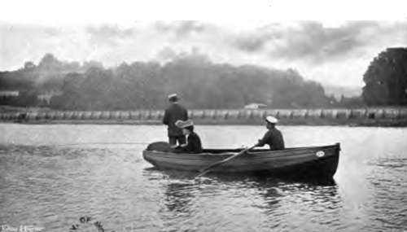

Chapter XXX. Sea-Fishing From Boats: General Remarks
Description
This section is from the book "Fishing", by Horace G. Hutchinson. Also available from Amazon: Fishing.
Chapter XXX. Sea-Fishing From Boats: General Remarks
This, then, concludes what I have to say about fishing from boats, but I do not want to take leave of the subject without a few words of caution on the subject of general procedure and behaviour in such fishing. In the first place, I think it would be as well if, without being in the least nervous, every one who fishes from boats were made to realise that any carelessness on his (or her) part may jeopardise not alone the life of the culprit, but also of the rest of the party, particularly of the unfortunate boatman, who, besides being as a rule hampered by heavy clothes the reverse of helpful to any one suddenly projected into the water, is in ninety-nine cases out of every hundred quite ignorant of the art of swimming. It is a well-known fact, and one which I have confirmed by directly questioning dozens of men so placed, that those who cannot swim have no fear of drowning. It is the old story of ignorance and bliss, the same blessed indifference as causes the newcomer to disdain the tropical sun or the Arctic cold, and to venture abroad in supreme disregard of the special clothing and other precautions adopted by those long resident in the place. The non-swimmer never realises the danger of collapse, as he might had he once fought with a strong current, as most swimmers have done in their time; and this is within certain limits a good thing, else half the best fishermen on the coast could never be induced to go afloat, and the younger generation, most of whom are able to swim, would never have a chance of learning by direct instruction the arts by which their fathers and grandfathers have earned their livelihood time out of mind. At the same time, it is only right to remember how these men are situated, and to be extra careful not to put their lives in any danger. A sailing-boat may be put in danger through the vanity of an amateur who insists on retaining the helm in a squall and on a coast with which he is unfamiliar. A rowing-boat, or at any rate its occupants, may be put in still greater danger through any one standing up in it.
70. - A Good One On
80.- Striking
Ladies-I shiver at my own temerity, but it must be said-are the most untiring offenders in this respect. As sure as a steamer passes so near as to rock the boat with the wash from her paddles, so, just at the worst moment, a lady in the boat will stand up. The precise object of this interesting demonstration I have never been able to fathom. Is it perhaps a sudden desire to protest against the disturbance? Does it rather rest on some vague, half-conscious animal instinct to get out of the boat and seek safety elsewhere ? I know not. The fact remains that those divine beings, whom we all cherish, do stand up in boats just as surely as they hop backwards and forwards in suicidal uncertainty when crossing Oxford Circus in heavy traffic.
Another thing to be very careful of in a boat is that nothing is so placed that any one may slip on it. A boat is not the place to slip in. The worst case of this that I know is when men are shooting seals or porpoises, or maybe cormorants, with rifles, and the empty brass cartridge cases are thrown in the bottom of the boat instead of overboard. I have seen many a disagreeable fall in this way, and on one occasion-it was out in Australia-a man nearly pitched overboard. When you pitch overboard in Australia you may have the quaint luck to pitch into the open jaws of an appreciative shark. Round objects, such as cartridges, thole pins, leaden bullets, and so on, are obviously more dangerous in such situations than others, but there is, or should be, a place for everything in a boat as well as out of it, and in that place let it be kept. For a similar reason no slippery piece of bait or fish should be left in spots where people are likely to step on them. Moreover, a little cleanliness in the boat is immensely conducive to the general comfort, particularly when there is any one whose stomach easily rebels.
With regard to the correct methods of launching and beaching and anchoring small boats, these matters are much better learnt on the spot. In the absence of skilled assistance, a little presence of mind and common-sense will go a great way. It will be apparent that to throw the whole weight in the bow of the boat when launching will not only make the work much more difficult, but will also make the risk of an upset at the start considerably greater. In beaching, too, it is advisable in most cases to back the boat in stern first, and when there is a swell or lop care must be taken to come in just behind a wave and not just in front of it. As to anchoring, this presents no difficulty as a rule with quite small boats, provided always that the anchor is efficient and the rope long enough. To put a heavy sailing-boat on a particular rock in twenty or thirty fathoms of water requires a good deal more practice, but one always takes a professional fisherman on such occasions, and he knows all about tatchings and splices and allowance for wind and tide. The anchor may, under certain conditions, be dropped ten or fifteen yards from the spot where the hooks should lie, but the wind and tide do the rest. In anchoring the boat on the sand, an anchor of the orthodox pattern will be requisite, but for fishing on the rocks a large square stone, or " killick," is generally sufficient. I have sometimes managed quite well with the stone on the sand, but it is not so generally useful in that place as an anchor. In Cornwall, indeed, the peculiar form of anchor known as a "grapnel" (locally pronounced "graper") is used under all conditions, and a nice business it sometimes is to haul it clear of the rocks. A " tatching " is made, which has the effect of disengaging it wrong way up, but sometimes, in spite even of this precaution, it is impossible to get it free at high water. The only plan is then to attach a cork buoy, with your initials cut or burnt deeply in, by a long line, and seek the anchor again at the next convenient low tide, taking the bearings of its position very carefully to facilitate picking it up again. When doing the same thing at low water, it is important to attach the buoy by a very long line, else it will be carried under and lost to sight in the deeper water at the flood. It is at flood-tide that submerged lobster-pots or trammels, with their hidden corks and ropes, are so fatal to the amateur's tackle, particularly when he is whiffing for pollack or mackerel and thus dragging his hooks through the water. When the tide is low and slack, the telltale corks are easily seen, and a very little care should suffice to steer the lines clear of the obstacle. When, however, all indication is hidden, collision may easily result. The only plan is to let out slack line, from either the rod reel or winder of the hand-line, and to back the boat on to the trammel or pot in which the hooks are fast. Even then, it may be impossible to recover all the gear, but something at any rate may be saved. It would be impossible to haul a large trammel to free the hook, as that is a laborious job involving the joint labours of several men used to the work. The lobster-pot, however, could easily be hauled and lowered again after the hook had been recovered. It would probably be found not in the pot itself, but in the rope some way below the surface. How far the fisherman is justified in disturbing a pot in which his hook is fast is a question in ethics which I am not called upon to decide, since in such a matter every one will settle for himself. Personally, I should feel justified in disturbing the pot to recover my hook if I also thought it worth while. Hauling a lobster-pot in deep water and a strong tide is, however, a pastime which may appeal to some, but not to me, and I had rather lose a dozen hooks than go to so much trouble.
Continue to:
- prev: Bass Fishing. Part 2
- Table of Contents
- next: General Remarks On Sea-Fishing From Boats. Continued